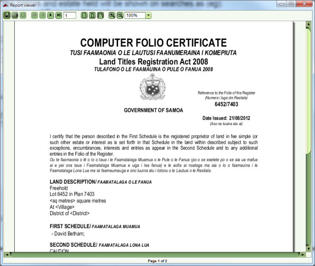
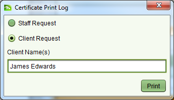
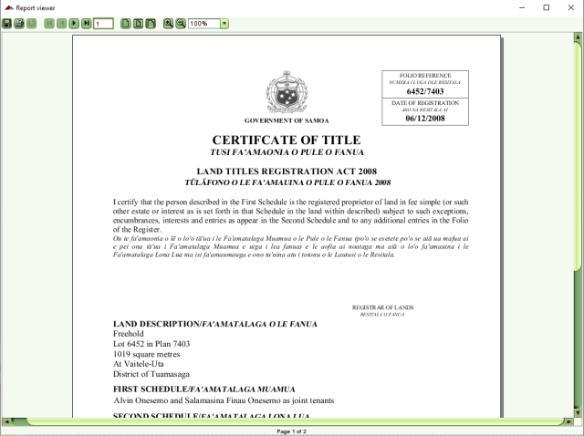

You can produce a Computer Folio Certificate for the property by clicking the Print Options
dropdown and selecting the Certificate option. If the property is linked to a parcel with a
spatial definition, the shape of the parcel will be included on the second page of the
Certificate.
Certificate option. If the property is linked to a parcel with a
spatial definition, the shape of the parcel will be included on the second page of the
Certificate.

Computer Folio Certificate
Other printing options include the Staff Search report and Historical Search report.
When printing a property report, you will be prompted to indicate if the report is being generated as a staff request or for a client. Indicate the appropriate option and click the Print button on the Certificate Print Log dialog. A read only history of all prints is displayed on the General tab of the Property Details screen.

Certificate Print Log dialog
The ability to produce a Certificate of Title (CoT) instead of the Computer Folio Certificate (CFC) has been added into version v2001a of SOLA. The cutover date from CFC's to CoT's is currently proposed for the 2nd March 2021. This date is the 12-year milestone since CFC's were introduced, however this date may be changed depending on the readiness of parties to accept the CoTs (i.e. banks, MNRE, land owners, etc). Once the cutover date is agreed, SOLA will require a configuration change before it will be possible to produce the CoT's.
Note that following the cutover date, CFC's will continue to be produced as the search copy for all property until such time as a dealing is registered on a property. Dealing registration will trigger the CoT to be produced for that property and any subsequent dealings or search copies for that property will also produce the CoT. This will ensure current holders of CFC's are not disadvantaged by needing to produce additional proof of ownership information after the CoT cutover date.

Certificate of Title